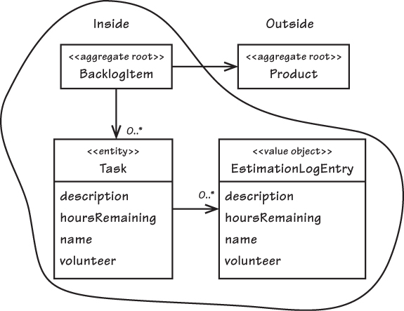

Domain Driven Design
101
Slides:
toukovk.github.io/ddd-101/
Intro
Main concepts
How to develop & practise?
Patterns (Tactical / Strategic)
Further techniques
Summary
How many of you have heard of Domain Driven Design / DDD?
Domain driven design
Domain
driven design
"That subject area to which the user applies the program is the domain of the software."
[Eric Evans, Domain-Driven Design]
"A domain, in the broad sense, is what an organization does and the world it does it in."
[Vaughn Vernon, Implementing Domain Driven Design]
What the business logic is about
Domain driven
design
In context of DDD:
code design
Domain
driven
design
Having focus on the domain and domain logic
What? The main parts
Focus on domain
Communication with domain experts
Domain & domain model as a first-class citizen
Ubiquitous language
For the domain model in code & communication
Patterns for applying DDD
Tactical: Present a domain model in codebase
Strategic: Multiple contexts & models
Why?
To understand the domain/business better
To meet the business needs better
To promote and improve communication
Especially between "tech people" and "domain experts"
When?
Not to be applied in every project/service
When the domain/business is at least somewhat complex
When the domain terms are not known in general
When good connection to domain experts
Overkill for e.g. simple CRUD application
Note
Big topic - this is pretty rough overall picture
Intro
Main concepts
How to develop & practise?
Patterns (Tactical / Strategic)
Further techniques
Summary
Ubiquitous language
A vocabulary for communication on the domain.
Shared by the whole team, both tech people and domain experts.
Used both in source code and speech
Domain model
"A Domain Model is a set of simplifications that represent those aspects of a domain that are relevant to a particular problem."
[Scott Wlaschin, Domain Modeling Made Functional.]
Domain model
Note: Not as realistic as possible, instead fitting for the particular purpose of the software
Iterated, refined and refactored as the knowledge of the domain increases and gets deeper
Bounded Context
Aiming for a single well-defined domain model for a big project or company will not work well.
Concepts for ubiquitous language and domain model are well-defined within an explicit Bounded Context.
Intro
Main concepts
How to develop & practise?
Patterns (Tactical / Strategic)
Further techniques
Summary
How to develop a domain model and ubiquitous language?
Not to be completed & set in stone with a single analysis
Continuous learning, iteration and refactoring
Close interaction with the domain experts
How to practise DDD?
DDD community likes patterns
-> Common vocabulary
How to practise DDD?
Tactical patterns
How to model a domain model in code
Roughly: Working within a single bounded context
Originally quite OO-centric (Java/C#)
Strategic patterns
Roughly: Working with & integrating multiple bounded contexts
Intro
Main concepts
How to develop & practise?
Patterns
(
Tactical
/ Strategic)
Further techniques
Summary
Tactical patterns
How to model a domain model in code
(Just a glimpse)
Domain model in code
A part/layer/section of the code for the domain model
Separate from infrastructure
Many options: layered architecture, hexagonal architecture, ...
Entity
An object that has identity and a thread of life
E.g. Customer
Value object
An object without identity
Often state of an entity
E.g. Customer's Address
Aggregate
A group of entity and value objects
Accessed through a root entity
Considered as one unit for persistency & consistency
Aggregate in practice
In relational DBs / ORMs: What to load & persist as a whole
Document DBs: One aggregate - one document
Microservices: Aggregates owned by microservice
Aggregate example

Source:
Implementing Domain-Driven Design: Aggregates
(Vaughan Vernon)
There are more...
Repositories, factories, ...
(This is where it might sound quite enterprisy)
To be used when relevant
Intro
Main concepts
How to develop & practise?
Patterns
(Tactical /
Strategic
)
Further techniques
Summary
Strategic patterns
How to work with multiple models, bounded contexts and services
Only briefly here
Bounded Context
Larger project/company will have multiple models
Attempt to create one model over all the services will fail
Accept & embrace this -> State explicitly the context the model lives in.
Often (but not always): one service ~ one bounded context ~ one team
Context Mapping
Identify different models / bounded contexts and the relationships between them.
Many of DDD's strategic patterns are about these relationships
Relationships between models
Shared Kernel: Share some part of the model between multiple bounded contexts
Customer/Supplier: Explicit customer/supplier relationship between two bounded contexts
...
Anti-corruption layer
Often there are services with incompatible domain model or without a clear one at all
E.g. Legacy services, 3rd party services, ...
To avoid other system's model "corrupting" your model, create an isolation layer
Intro
Main concepts
How to develop & practise?
Patterns (Tactical / Strategic)
Further techniques
Summary
Further techniques
Some techniques that are popular in DDD community
(Brief description & links for more)
Event sourcing
Store state as history of Domain Events
In DDD context, a single event would usually affect a single aggregate
See e.g.
here
for more information
Command Query Responsibility Segregation (CQRS)
Different model for updates (Command Model) vs reading information (Query Model)
See e.g.
here
for more information
Event Storming
"a flexible workshop format for collaborative exploration of complex business domains"
[
https://www.eventstorming.com/
]
Originally tool for finding aggregates. Evolved to general domain & business exploration technique
See e.g.
here
for more information
Intro
Main concepts
How to develop & practise?
Patterns (Tactical / Strategic)
Further techniques
Summary
Summary
What to take from this?
Where to learn more from?
What to take?
(with or without DDD)
Aim to learn & understand your project's domain
Communicate with the domain experts
Aim for consistent naming for domain terms (communication, code, ...)
Do you want more?
Please come to discuss :)
Podcast episode
Eric Evans on Domain-Driven Design at 10 Years
Introduction to DDD
Relationship to ES, microservices, CQRS
Martin Fowler's Bliki
InfoQ has a
free mini ebook
Books (that I have read)
Domain-Driven Design
by Eric Evans
The "canonical DDD book" (2004)
Main content & concepts have aged pretty well, the code samples haven't so well
There is
reference
freely available
Implementing Domain-Driven Design
by Vaughn Vernon
More concrete (2013), Java/OO focus, will age
Books (on my TODO list)
Domain Modeling Made Functional
Tackle Software Complexity with Domain-Driven Design and F#
Functional and Reactive Domain Modeling
(Scala, Akka)
Some closing thoughts
Take the parts & patterns that make sense in your context
Eric Evans: Stop using DDD as an excuse for perfectionism!
Relationship of DDD & service design etc.?
Thank you! Questions?
Slides:
toukovk.github.io/ddd-101/